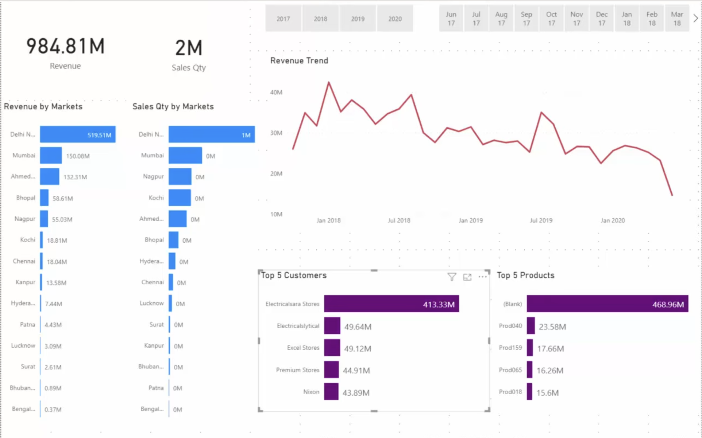

My Focus
I am interested in analyzing data, identifying meaningful patterns, and presenting findings through dashboards that are easy to understand. My current learning path combines AI, business data, and visual storytelling.
Academic Portfolio
I am Teja Swaroop Cherukuri, a master's student in Artificial Intelligence with a strong interest in data analysis and dashboard design. I enjoy working with business data, customer trends, and visual reporting that supports better decisions.

Data-focused learner
Growing in analytics, visualization, and AI-based problem solving.
About Me
I am interested in analyzing data, identifying meaningful patterns, and presenting findings through dashboards that are easy to understand. My current learning path combines AI, business data, and visual storytelling.
My strength is combining structured analysis with clear presentation. I enjoy exploring sales data, customer behavior, performance trends, and decision-support reporting using tools like Python, Power BI, and Excel.
I am looking to grow in roles related to data analysis and dashboard design, where I can contribute with practical analytics, strong curiosity, and a willingness to keep learning.
Skills
Projects
Studied social media interaction patterns using Facebook-related engagement data to understand user behavior, content response trends, and digital activity signals. The goal was to turn platform metrics into a visual story that was easy to interpret.
This is the main coursework artifact. I analyzed retail transaction data to evaluate sales performance, product movement, and customer demographics, then translated the output into a dashboard-style presentation.

Developed a Generative AI chatbot to promote sustainable and eco-friendly travel. The chatbot gives recommendations on responsible tourism, green transportation, and ways to reduce environmental impact.
Generative AI, Large Language Models (LLM), Prompt Engineering, AI Chatbot Development, Sustainability Analytics, Design Thinking

This case study explores the practical difference between Machine Learning and Deep Learning by focusing on when each approach is the better fit. Instead of only explaining theory, I framed the comparison through real-world examples like spam filtering for ML and self-driving vision systems for DL.
The hardest part was avoiding too much technical detail. Revising the project taught me that clear explanation matters as much as correct analysis, and that strong visuals help complex AI concepts feel approachable.


Education & Certifications
Indiana Wesleyan University
St. Peters Engineering College
Coursera learning path
Udemy
Forage / simulation-based learning experience
Why This Portfolio
This portfolio is designed to present me as an aspiring analyst who is ready to learn, contribute, and grow through hands-on analytics and dashboard projects. While I do not have job experience yet, I have built project-based experience that reflects my interest in real-world data work.
Contact